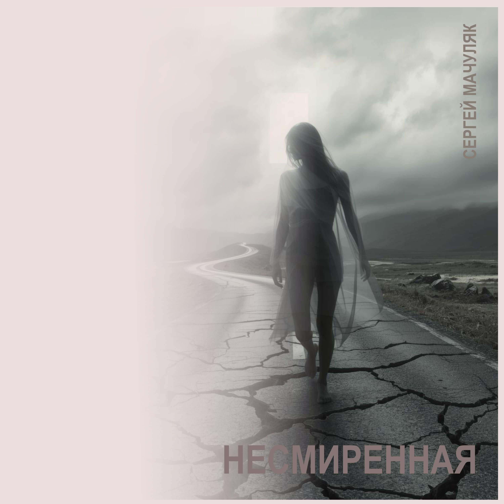

Автор текста: Сергей Мачуляк, 2020
Музыка: Сергей Мачуляк
Релиз: 25 октября 2025
© Сергей Мачуляк. Все права защищены.
«Несмиренная» — тёмная кинематографическая фолк-баллада о женщине, чья жизнь оказалась раскроенной болью, утратой, виной и чужим осуждением. Но её несмиренность сохраняет последнюю силу, способную привести к внутреннему освобождению — смерти прежнего эго, тотальному прощению и новому духовному рождению.
«Несмиренная» — песня о женщине, чья жизнь предстаёт чередой переходов, разбитых дорог и оборванных возможностей.
Она появляется перед слушателем бедной, бледной, пьяной, почти уничтоженной. Песня не рассказывает подробно, кем она была прежде и что именно привело её к этому состоянию. Вместо цельной биографии остаются обломки: слёзы, телесная боль, чувство вины, осуждение и голос, который отказывается замолчать.
Вопрос «Сколько радости видела в жизни разорванной?» звучит почти без надежды на ответ. Её судьба похожа на искалеченную ткань — перебитую, раскроенную, сшитую и снова разорванную. Каждый шов хранит память о пережитом.
Она говорит навзрыд и взахлёб. Спокойной речи уже недостаточно, чтобы вместить накопившуюся боль. В мире, где от человека часто требуют терпения, покорности и молчания, её голос становится бунтом — последним доказательством того, что внутри неё ещё остаётся живая душа.
Строки о нерождённом ребёнке намеренно беспощадны. Они несут память о прерванном материнстве, тяжёлом решении, утрате и вине, с которой женщина осталась наедине. Песня не выносит ей приговора и не закрывает рану красивыми словами.
Она не смогла, не стерпела, отказалась принять свою судьбу как окончательный приговор. Именно поэтому она названа несмиренной. В этом слове соединяются осуждение и скрытое достоинство: её сопротивление одновременно мучает её и сохраняет остаток внутренней свободы.
В финале появляется верба. Её набухшие почки готовы разорвать прежнюю оболочку и раскрыться навстречу весне. Этот образ становится ключом ко всей песне.
Финальная строка «И спасёт тебя смерть от себя, несмиренную» говорит не о физической смерти. Речь идёт о смерти эго — того израненного и ожесточённого «я», которое хранит обиды, вину, страх, осуждение и вновь возвращает человека к прежним ранам.
Спасти героиню может просветление — тотальное прощение всех, кто причинил ей боль, и прежде всего прощение самой себя. Это прощение не отменяет случившегося. Оно прекращает внутреннюю войну.
Смерть эго становится смертью личности, построенной из ран, и одновременно — вторым рождением. Подобно весенней почке, разрывающей тесную оболочку, женщина может выйти из собственной боли преображённой. Она не уничтожает себя — она перестаёт быть пленницей прежнего образа себя.
Поэтому весна в песне означает духовное возрождение. Старая форма распадается, чтобы могла возникнуть новая жизнь.
«Несмиренная» — песня о женщине, которую не спасут бегство, забвение, чужой приговор или даже чужое прощение. Спасти себя она может только сама: умерев для прежнего эго, простив всех и себя и родившись вновь — вместе с весной, словно набухшая почка на ветви вербы.
Переход, переходы, дороги разбитые.
Плачет бедная, бледная, пьяная, спитая.
Сколько радости видела в жизни разорванной,
Перебитой, раскроенной, непревзойдённою?
Говорила навзрыд и взахлёб, не молчала ты.
Не рожала, а сбросила, скинула в пропасти.
Не смогла, не стерпела ума предсказания.
Отказалась, отбросила — грудь перевязана.
Больно, болью умытая, сшитая, разорванная,
Осуждённая, брошенная, мартом оторванная.
Говорила навзрыд и взахлёб, не молчала ты.
Не рожала, а сбросила, скинула в пропасти.
Где найти тебе веру в безверии временном,
Переплавить в любовь все свои нетерпения?
Верба почки свои разорвёт по-весеннему,
И спасёт тебя смерть от себя, несмиренную.